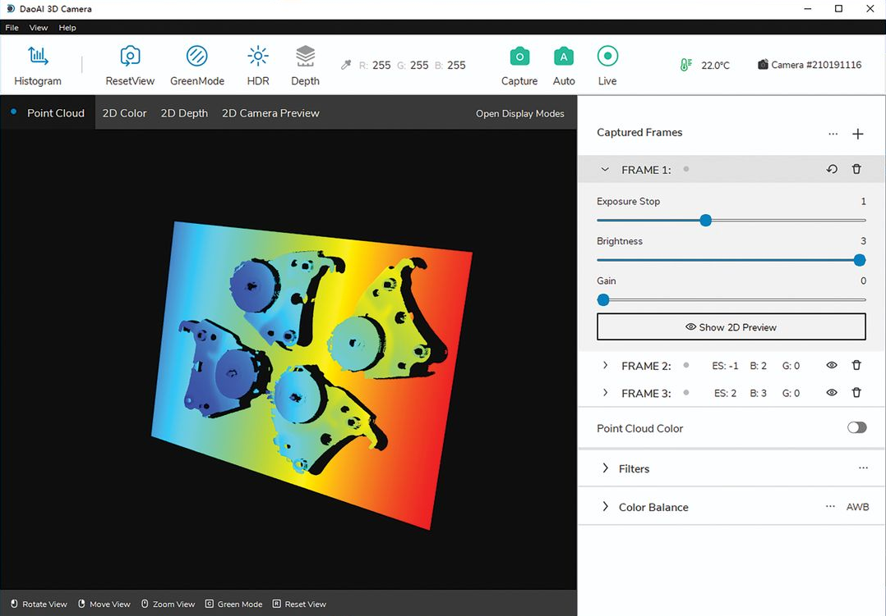

3D computer vision for bin picking applications.
From September 2021 to April 2022, I interned as a computer vision engineer at DaoAI Robotics, a then startup company that utilizes 3D computer vision and deep learning to create bin picking applications. I mainly worked on developing point cloud postprocessing algorithms (things like outlier removal and gap interpolation) to improve the quality of data generated by their structured light 3D scanners.
I also worked on developing features such as a pseudo-color point cloud visualization mode (see above) for their camera software, DaoAI Camera Studio. I also did a good amount of embedded software development and cross platform development during the development process of one of their new Raspberry Pi based prototypes at the time.
I enjoyed working at DaoAI for two-ish main reasons:
-
The technology was interesting
This internship basically served as my introduction to computer vision. Learning about 3D reconstruction methods was super interesting and I had a lot of freedom from my supervisor to work on projects that were a lot more involved than the types of tickets that co-op students would normally get.
-
The company was small and and the work was fast paced
Our office space consisted of around 15 people, all of whom where software engineers. Everyone's main focus was on development, which was refreshing. In retrospect, I'm really grateful that didn't have to deal with the politics that comes with bigger companies.